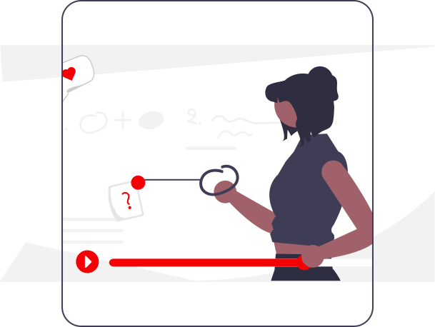
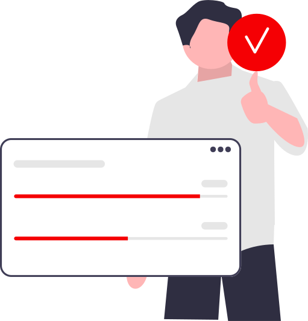

Tasks é um aplicativo para organizar suas tarefas, com ele é possível criar cadernos com o nome dos projetos que precisa desenvolver.
Com Tasks também é possível definir horários de início e fim de uma tarefa.
Também é possível adicionar outros usuários para trabalhos em equipe.
Cadastre-se agora e começe a usar o Tasks.
